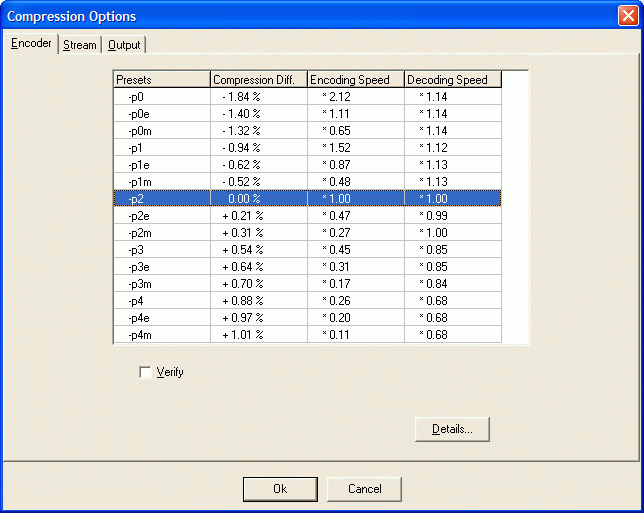
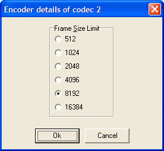
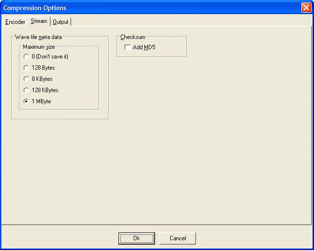
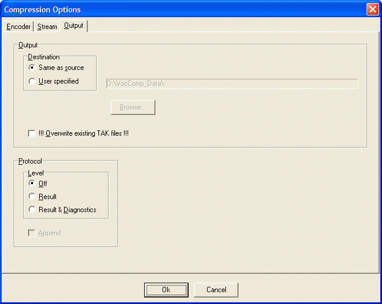
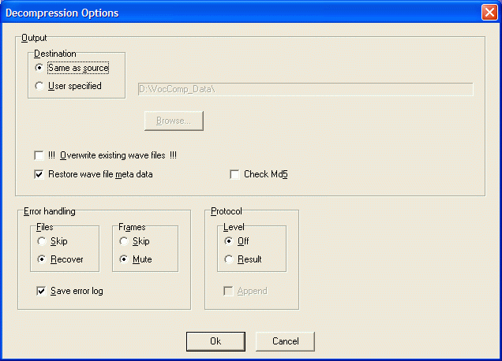
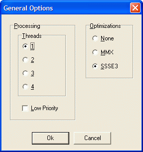
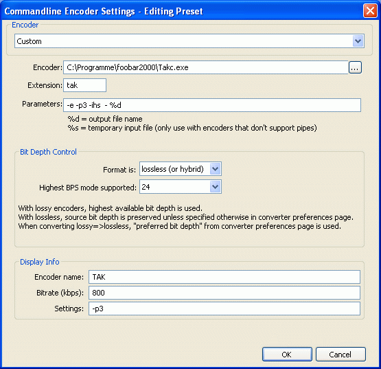

(T)om's lossless (A)udio (K)ompressor.
Version: TAK 2.1.0, 2011-01-08
Copyright 2006 by Thomas Becker, D-49080 Osnabrück.
All rights reserved.
This software is provided as FREEWARE, but only for private, non-commercial use. It's also free for educational and scientific use and for use in charity and humanitarian organisations.
The software is provided "as is" without warranty of any kind. To the maximum extent permitted by applicable law, the author further disclaims all warranties, including without limitation any implied warranties of merchantability, fitness for a particular purpose, and non-infringement. The entire risk arising out of the use or performance of the product and documentation remains with recipient.
To the maximum extent permitted by applicable law, in no event shall the author be liable for any consequential, incidental, direct, indirect, special, punitive, or other damages whatsoever (including, without limitation, damages for loss of business profits, business interruption, loss of business information, or other pecuniary loss) arising out of this agreement or the use of or inability to use the product, even if the author has been advised of the possibility of such damages.
The Software may be freely distributed provided that it is not modified and the original archive remains intact with all accompanying files, and provided that no fee is charged (except for any reasonable fees necessary to cover costs of distribution media).
I am frequently active in the Lossless Audio Compression forum at Hydrogen Audio; a good place to ask questions regarding TAK.
My homepage, www.thbeck.de, contains some information about TAK, but unfortunately only in German.
If you would like to contact me by email please be aware that I will not always have time to answer.
Thank you to all the people who have supported the development of TAK, most of whom are members of Hydrogen Audio.
Firstly, they have provided encouragement to build yet another lossless audio compressor. Otherwise I would have dropped the whole project!
They helped to evaluate and optimize TAK. There have been 13 releases over a period of 8 months before the alpha version, and all of them have been evaluated by those testers!
TAK is a lossless audio compressor, similar to FLAC, WavPack and Monkey's Audio. On average, lossless compression reduces the file size to about 50 percent of the original size; however the compression can vary between approximately 30 and 70 percent, depending on the file. Decompression restores a bit identical copy of the original audio data (that's why we call it lossless).
My goal was to develop a compressor which combines good compression with optimal decoding speeds. On average, the current implementation should match the compression efficiency of Monkey's Audio High, while achieving decompression speeds similar to FLAC.
Some important features are missing in this release. Please find below my current to-do list (in order of my current priority):
Only Wave for now.
As the streaming format is only partially implemented, and because some less common formats need some more fine tuning and verification, only a subset of the possible audio formats are supported in this version: Sample rates from 8000 to 192000 Hz. Bit depths of 8, 16 or 24. Channels: Mono or Stereo.
The final implementation should support 8 to 24 bits per sample and up to 16 Channels.
Wave files may be up to 4 GB in size (to be exact: 4 GB minus 15 bytes for now). Unfortunately some applications partition the audio data in chunks of 2 GB size, if the source data is bigger than 2 GB. This is against the Wave file format standard and currently not supported by TAK.
While TAK now supports tagging on its own (APEv2 located at the end of the file), it still does not support unicode characters on the command line.
Please note, the current decompressor will throw an error message if you have prepended tags to the beginning of the file. This may be fixed in later releases.
The archive contains two versions of TAK:
Can save the audio data as TAK files. Guides:
Encoding, decoding, tagging and playback. Guides and plugins:
Transcoding.
Supports TAK since V 2.38.
Playback of TAK files. Requires this plugin.
Processing and analysis of (compressed) WAVE-audio files.
Playback of TAK files. Requires my Winamp plugin.
Playback of TAK files. Requires my Winamp plugin.
Transcoding.
Compression creates files with the same name as the source, but with the extension '.tak':
Sample.wav -> Sample.tak
By default existing files will not be overwritten.
If there are any problems with a file you will see a short message following the file name:
| Message | Description |
| Meta data too big | The non-audio wave file meta data was bigger than 1 MByte, and could not be stored in the file. The audio data itself is intact. |
| Audio format not supported | The current encoder implementation cannot handle the source audio format. |
| Wave file not supported | My wave file reader was not able to parse the wave container, or the source file structure is damaged. |
| Error reading source | A source I/O error occurred. |
| Error writing destination | A destination I/O error occurred. |
| Verify failed! | This will only happen with Verify enabled. Possible reasons: A bug in the encoder, or instable hardware. |
| Already exists | The destination file already exists, and you have not specified the Overwrite option. |
The Options dialog lets you choose encoder options like the preset, which determines compression efficiency, encoding and decoding speed. Furthermore you can modify stream properties and specify output options like for instance the destination directory.

The table contains 15 rows. Each is representing one encoder preset, which affects compression efficiency, encoding and decoding speed. You select a preset with a mouse click.
Each preset selects a set of internal encoder options. Some of them affect only the encoding speed, the others also the decoding speed.
Slower decoding usually means higher hardware requirements (memory size and/or cpu power) for a playback device. Some devices may be too weak to support the more demanding internal encoder options. But any option, which only affects the encoding speed and complexity, is always applicable.
Therefore each preset consists of two components:
Presets are beeing declared as a combination of the profile and the abbreviated evaluation level (if not specified Standard is beeing used): 0 is the fastest, 4m the strongest setting.
Put a -p in front of the preset and you get the corresponding command line parameter for TAKC, which is also used in the table as name for the preset.
A hardware manufacturer supporting TAK has only to specify the strongest profile it's hardware can decode, because the evaluation level does not affect the hardware requirements.
Hint: If you want higher compression and fast encoding, and are able to accept some decrease in decoding speed, it is usually preferable to select a higher profile instead of increasing the evaluation level.
The table contains results from my primary test file set to give you an idea of the effect of profiles and evaluation levels on compression efficiency, encoding and decoding speed. Depending on your files and system you may get quite different results!
The data in columns 2 to 4 is always relative to the currently selected preset:
Compression difference tells you, how much better (positive values) or worse (negative values) the other presets performed. Example: if 2 is selected (Default), you can see, that 4 + MAX achieved 1.00 percent better compression on my file set. Percentage values always refer to the original, uncompressed file size.
Encoding/Decoding speed: How much faster / slower are the other presets on encoding / decoding.
With Verify enabled, any compressed frame is subsequently decompressed and then compared to the original data. This reduces encoding speed, but is useful for the more paranoid among us!
The Details dialog let's you modify some internal encoder options.

The Frame size is defined as samples per channel. The encoder first calculates the frame size for the preset's Frame Duration and then compares the resulting sample count with the Frame Size Limit value. If it's bigger, it will be limited. An Example:
Profile 0 is using a Frame Duration of 94 ms. CD-Audio has a sample rate of 441000. 44100 * 0.094 = 4145 samples. This value is bigger than the profile's Frame Size Limit and will therefore be limited to 4096.
Caution: if you increase the frame size limit, you are breaking the profile's specification! Some hardware players may not have enough memory to decode the bigger frames. Decreasing the frame size usually reduces the compression efficiency.
There is only one situation where you are advised to change the frame size limit: If you want to encode files generated by the high quality LossyWav- preprocessor, Tak's frame size has to match the preprocessors frame size (usually 512 samples). For more information about LossyWave please read those threads at Hydrogenaudio.org: Near-lossless / lossy FLAC, An idea & MATLAB implementation and lossyWAV Development, WAV bit reduction by 2BDecided.
Another warning: Frame Size Limit's of 512, 1024 and 2048 can not be decoded by TAK applications and libraries prior to V1.0.2!

When decompressing TAK always generates a bit identical copy of the audio data of the original wave file. Nevertheless, the resulting wave file may be different from the original!
This is because a wave file contains not only raw audio data, but also some header structures describing the audio format, and sometimes additional data which is not needed for the playback - for instance meta information created by the application that created the original wave.
Even if there is no additional (dropped) information besides the wave header, the wave file created by the decoder can be different from the original. This is because there are several different ways to create a valid wave header describing the same audio format. TAK may use an alternative to the creator of the original wave.
All this does not affect the validity of the audio data itself. It will always be bit identical to the original!
By default TAK will store up to 1 MByte of non-audio data into the compressed file. This guarantees a bit identical reproduction of the whole wave file, including the non-audio data.
Specify a maximum size for the meta data. If it is bigger, it will not be be copied into the TAK file.
Check this option if you want TAK to calculate a MD5 checksum of the raw (unencoded) audio data excluding headers or other meta data contained in the source file. The MD5 will be stored in the meta data section of the compressed file. Depending on the preset, the calculation may result in a noticable slow down of the encoding process.
Why you may want to add an MD5:

Where should the compressed files be stored:
Enable this option to overwrite already existing TAK files; otherwise they will be skipped. You will not be asked for a confirmation!
TAK can save information about the compression process in the protocol file "Tak_Enco_Proto.txt", which will be created in the output directory.
What should be stored into the protocol file:
Append new protocol data to an existing protocol file, instead of overwriting it.
Decompression creates files with the same name as the source and the extension '.wav':
Sample.tak -> Sample.wav
By default existing files will not be overwritten.
If there are any problems with a file you will see a short message following the file name:
| Message | Description |
| Invalid Stream-ID | The Stream-ID (indicating that this is a TAK file) at the beginning of the file is damaged, but everything else is intact. |
| Stream info damaged | The stream info meta data is damaged, but everything else is intact. |
| Meta data damaged | One or more of the meta data structures are damaged, but the audio data is intact. |
| Stream structure damaged | The stream part containing the audio data had errors, but the audio data itself is intact. |
| Frame(s) damaged | At least one audio data frame is damaged. |
| Undecodable | Too many errors. The file cannot be decoded (it possibly isn't a TAK-file). Occasionally it is worth trying again, with the Restore wave file meta data-option disabled. |
| Audio format not supported | The file has been created with a newer encoder, which is able to handle more audio formats than the decoder you are using. |
| Incompatible version | The file has been created with a newer encoder, which uses compression methods not supported by the decoder you are using. |
| Error reading source | A source I/O error occurred. |
| Error writing destination | A destination I/O error occurred. |
| Already exists | The destination file already exists and you have not specified the Overwrite option. |
The Options dialog gives you access to a few decoder options.

Where should the decompressed files be stored:
Enable this option to overwrite already existing wave files; otherwise they will be skipped. You will not be asked for a confirmation!
Enable this option to write the non-audio meta data of the original wave file into the decompressed file.
This only works if the compressed file has been created with the encoder option "Save wave file meta data" enabled, and the meta data was not larger than 1 MByte.
Enable this option if you want TAK to calculate a MD5 checksum of the decoded audio data and compare it with the one stored in the compressed file.
This only works if the compressed file has been created with the encoder option "Add Md5" enabled.
Depending on the preset, the calculation may result in a noticable slow down of the decoding process.
How should errors caused by damaged files be handled?
Important: You will sometimes have to disable the "Restore wave file meta data" option to decode a damaged file!
Select Skip, if you don't want to decompress damaged files. If you select Recover TAK will attempt to recover as much of the audio data as possible.
Specify what should be done if the decompressor finds a damaged block of audio data within the file:
If enabled, an error log is saved to the file "Tak_Deco_Error.txt".
TAK can save information about the decompression process in the protocol file "Tak_Deco_Proto.txt", which will be created in the output directory.
What should be stored into the protocol file:
The General Options dialog gives you access to options which affect several or all program functions.

If your cpu has multiple cores, you may speed up processing if you let TAK distribute the work among several threads. By default only 1 thread is created. Currently multithreading is only supported by the encoder.
Some hints:
Execute with low priority. Nice for background processing.
Most cpus support additional instruction sets which can be used to speed up the processing. By default TAK will atomatically use any available instruction set it can take advantage of. You may restrict TAK to use only specific instruction sets:
Usually there is no reason to override the automatic selection.
This section describes the content of the Decompressor error log file "Tak_Deco_Error.txt".
An entry is created for each damaged file:
--- 41_30sec_No head - No tail.tak ---
Result
Audio data damaged
Stream components
File-ID damaged
StreamInfo damaged
Meta data damaged
First frame not found
Audio data
Size in samples: 1323001
Damaged samples: 12523
Muted samples: 12523
Cut samples: 0
Damaged blocks : 2
Damaged data blocks
No Position Size
1 0 4134
2 1314612 8389
Sections:
contains:
contains a list of defective data blocks. Each block is characterized by it's position and size within the decompressed (wave) file in samples. With this information it is easy to find the affected file parts within an audio editor.
This command will show you some useful information about compressed TAK files, which can optionally be written to a protocol file. Operation is nearly identical to decompressing files.
Example output for one file:
=== waiting.tak ===============================================
File size: 2.19 MB
Header size: 0.24 KB
Unused: 0.00 KB
Compression: 64.46 %
Samples per channel: 888832
File duration: 20.15 sec
Frame duration: 125 ms
Seek table: Yes
Audio format: PCM, 44100 Hz, 16 Bits, 2 Channels
Codec: 2 Integer 24 bit (TAK 2.0)
Encoder: V 2.0.0, -p2
Wave file meta data: Header 44, Footer 0 Bytes
MD5: 00c29080dc2892f24b712b86fea12f87
APEv2-Tag: No
Status: Ok
Items:
The Options dialog lets you choose the information to show:
If you check the Save protocol option, any output will be saved to a protocol file named "Tak_Info_Proto.txt" located in the source file directory.
TAKC -mode [-p# -fsl# -wm# -md5 -ihs -v -overwrite -fim# -l# -silent -w]
[-lp -tn# -cpu# -tt #] infile [outfile]
-mode -e encode, -d decode, -t test decode, -te test encode,
-fi file information
-p# select encoder preset #: 0-4 (fastest to strongest, default is 2).
Append E/M (-p2m) to increase the evaluation level to Extra/Max.
pMax is a synonym for the strongest setting.
-fsl# Set the frame size limit to # samples per channel. Valid values:
512, 1024, 2048, 4096, 8192, 16384. Up to 8192 for -cLW
-wm# Control saving(encode)/restoring(decode) of wave file meta data:
0 = disable
1 = enable and use default values for maximum size (default)
46 to 1048576 = enable and set maximum size (encoding only)
-md5 add (encoding) / verify (decoding) MD5 of the raw wave data
-ihs ignore (wave) header size entry (pipe encoding only)
-v verify encoded frames (when encoding)
-overwrite overwrite existing output files (without confirmation!)
-fim# select file information mode #
0 = any information (default)
1 = encoder
2 = wave meta data
3 = MD5
-l# select log file level #
0 = no log file (default)
1 = log results
Append A (-l1a) to append new results to an existing file.
-silent silent operation: Write nothing to StdOut/the screen.
-w wait for enter key when finished
-lp Execute with low priority. Nice for background processing.
-tn# Use # threads for encoding (1-4, default is 1).
-cpu# Use (up to) the # cpu instruction set optimizations.
None = Use plain Pascal code
MMX = Use MMX
SSSE3 = Use MMX and SSSE3
By default any available instruction set is used.
-tt # Add textual tag item #, where # is a key/value pair: "key=value",
for instance "TITLE=A nice song". "key=@file" will read the value
from the text(!) file "file" in the source directory.
infile Specify file or directory (Dir\*) to be processed.
- selects StdIn (encoding only, requires outfile specification).
outfile Specify output file or directory (Dir\*).
- selects StdOut (decoding only, requires infile specification).
What should the program do:
Select an encoder preset. Default is -p2.
Set the Frame Size Limit to one of the listed values.
Specify 1/0 to enable(default)/disable saving(encode)/restoring(decode) of non-audio wave file meta data. Please read the description of the GUI version for the options Wave file meta data and Restore wave file meta data.
On encoding you may also specify a maximum size (46 to 1,048,576 bytes) for the meta data, for example:
-wm1024
limits the meta data size to 1024 Bytes. If it is bigger, it will be ignored.
The default value selected by -wm1 depends on the encoding mode:
On encoding (-e): Calculate a MD5 checksum of the raw audio data and store it in the compressed file.
On decoding (-d, -t): Calculate a MD5 checksum of the decoded audio data and compare it with the Md5 stored in the compressed file.
Ignore the (wave) header size entry in the source file. Only valid when pipe encoding.
Enables Verify: Any compressed frame is subsequently decompressed and then compared to the original data. This reduces encoding speed, but is useful for the more paranoid among us!
By default already existing output files will not be overwritten. Specify this option to enable overwriting. You will not be asked for a confirmation!
Select the file information to show.
Specify the log (protocol) file level.
Silent operation: Write nothing to StdOut/the screen.
Use # threads for encoding.
Use (up to) the # cpu instruction set optimizations.
Some remarks:
Tagging is only available when encoding.
TAK does not distinguish between upper and lower case in the keys; therfore "key" and "KEY" are equivalent.
You may assign multiple values to the same key:
-tt "Artist=One" -tt "ARTIST=Two"
will create a tag item with the key "Artist" and the value "One Two". The notation of the first appearance of the key is beeing used. Multiple values are beeing separated by zero bytes as defined in the APEv2 specification.
Item values are not allowed to be empty.
Depending on the selected mode the program automatically appends the proper extension to the file spec: ".wav" when encoding, ".tak" when decoding.
Examples for encoding:
d:\VocComp_Data\Sample
Compress file "Sample.wav" in the directory "d:\VocComp_Data".
d:\VocComp_Data\*
Compress any file with the extension ".wav" in the directory "d:\VocComp_Data".
*
Compress any file with the extension ".wav" in the current directory.
-
Read the data to compress from StdIn. See pipe encoding for more information.
The optional outfile specification works the same way as infile.
Specify "-" to enable pipe decoding: The decoded data is beeing written to StdOut. Currently there are some minor issues with pipe decoding.
Not every in-/outfile spec combination is valid: if you are using wildcards for the infile, you cannot specify an individual filename as outfile. With pipe decoding you have to specify an individual infile.
The following exit codes may be returned:
No errors.
One or more of the command line parameters are invalid.
The requested operation failed. Currently nearly any failure is beeing reported as error including the detection of damaged audio data when decoding, even if the file could be partially decoded.
Only exception: If a file is beeing compressed and the wave meta data is too big to be copied into TAK's meta data, the resulting warning is not beeing reported as error.
Probably later program versions will differentiate warnings (code 2) and errors (code 3).
Usually TAK reads the data to be encoded from a wave file. Sometimes this is not the best way:
This method requires some disk space for the temporary wave file and reading and writing of this file will cost some time.
Those disadvantages can be avoided if the application supports pipe encoding: In this context pipe means a direct connection between two applications. The application writes the data to encode into one end of the pipe and TAK reads it from the other.
Currently the pipe data has to be in the wave file format. Later TAK versions will also support raw data streams.
To activate pipe encoding you have to specify a minus as source file and an outfile specification is obligatory:
takc -e - Outfile
Because the pipe can only be read sequentially and it's final size is unknown, TAK can not know in advance, if there will be some (rare) additional wave meta data at the end of the file. Since wave meta data is beeing stored into TAK's meta data structures in the file header and this has to be created when encoding starts, TAK has to reserve sufficient space to hold the meta data it might encounter at the end of the file. If the space is too small, the meta data can not be stored, if it is too big, we are wasting some space and the compression will be not optimal.
You may use the -wm option to control the size of the reserved space:
takc -e -wm46 - Outfile
reserves 46 Bytes which is also the default setting for pipe encoding. This is only sufficient for the simpliest wave file header, but will waste nearly no space.
A similar problem arises if the other application does not know the final sample count of the audio data. This can happen, if the audio data is simultaneously beeing ripped from a cd or if the data is beeing converted from a format which doesen't provide an accurate size information before the whole decoding is done. In both cases the other application can not write an accurate sample count into the wave header which is beeing sent to TAK.
You have to tell TAK to ignore this size entry by adding the ignore-header-size switch to the command line:
takc -e -ihs - Outfile
The -wm switch can not be used in combination with the -ihs switch. If the header data is invalid, it's useless to save it.
You have to create an encoder preset to use pipe encoding with Foobar2000. Here an example of a preset i created for Foobar2000 V0.9.4.5:

Some remarks:
If you are using Foobar2000 V1.1 and above please read New component installation scheme
This release brings speed optimizations and multi core support for the encoder. The dedicated LossyWav-codec that was available in the beta releases has been removed.
Improvements:
Modifications:
This release introduces a new file format, which can not be decoded by earlier versions of Tak, Takc, in_tak and tak_deco_lib! But surely it can decode files created by any earlier version.
Improvements:
Modifications:
New Features:
Improvements:
Fixes:
New Features:
Improvements:
Modifications:
New Features:
Improvements:
Modifications:
New Features:
Improvements:
Modifications:
Fixed a bug in the GUI version ("Tak.exe"):
New Features:
Improvements:
Modifications:
Fixed:
New preset configuration:
New Features:
Improvements:
Fixed:
Features:
Fixed:
Fixed:
Both bugs affected only the decoder, therefore there is no need to re-encode TAK files created with beta 2.